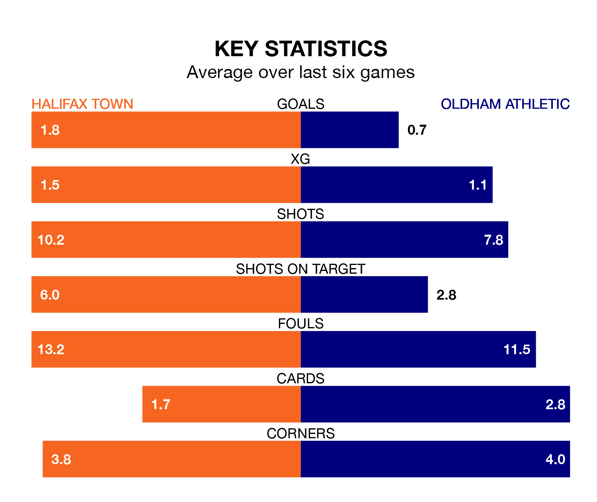

Oldham Athletic travel to the Shay Stadium looking to secure a first win in nine National League games against Halifax Town on late Wednesday.
The Latics have lost three and drawn five matches since they last earned three points – against Eastleigh on February 27.
They face a Halifax side who have won five and drawn one over that time.
With 53 goals in 42 games so far this season, Halifax are scoring at below the league average rate with 1.3 goals per game. But they are conceding fewer than average too, letting in 46 goals at a rate of 1.1 per game.
Oldham are also below average scorers, with 1.4 goals per game, compared to a league average of 1.5. They have conceded 1.3 goals per game.
Town are eighth in the table after 42 games, of which they have won 18 and drawn 12, earning 66 points.
Athletic are two places behind the Shaymen in 10th, with 15 wins and 16 draws putting them on 61 points.
In the last three years, Halifax and Oldham have played each other on three occasions. Halifax won all of them.
Their last meeting was on August 15, when Halifax won 2-1 away.
Halifax's last match was on Saturday, a 2-0 win against Kidderminster Harriers, with Max Wright getting the goals for the Shaymen.
Oldham drew 1-1 with Rochdale last time out, also on Saturday, with Hallam Hope on the scoresheet.
Updated: 14:47 (UTC), 09/04/24